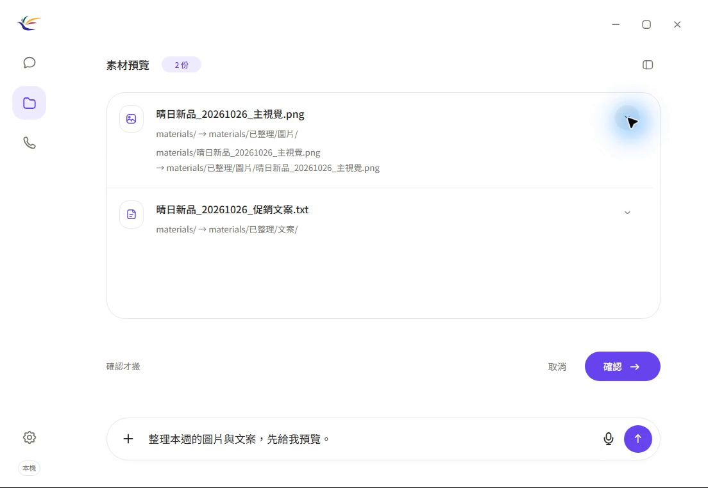

2026
MarVoiReflex 專題製作｜組長
國立臺北大學｜數位行銷進修學士學位學程
- 規劃專題進度、整合團隊成果。
- 以小型商家的行銷素材整理需求為研究情境。
- 整合研究文件、原型展示與測試規劃。

國立臺北大學 · 數位行銷
AI 應用 × 產品設計 × 工作流程
數位行銷進修學士學位學程
關注數位行銷與 AI 應用的整合，透過產品原型與專題研究，探索更直覺、可確認的工作流程。
國立臺北大學｜數位行銷進修學士學位學程
探索案件、訊息與 AI 草稿整合的行銷工作流程，以人工確認與任務脈絡為產品方向。
任務理解、工具使用、預覽確認與結果驗證。
行銷素材、內容整理與日常任務的數位化。
需求拆解、資訊呈現與可操作的產品原型。
Windows CPU 原型、語言模型與語音操作研究。

依公開 README 整理。原始碼、研究原型與企業案例分開標示；同產品的構件與迭代不重複算成獨立產品。
Windows 常駐翻譯器與跨平台 Agent 的兩條開發路線，整合本地模型與原生介面。仍為 Beta，語意與實機驗收尚有缺口；原始碼維護於第二個公開帳號。
免訓練 GGUF 權重編輯研究，整理數學推導、對照實驗與負面結果。Prism 為實驗 checkpoint，不是通用模型升級或新預訓練基礎模型。
以本地 MCP 橋接 ChatGPT Web 與 Codex CLI，處理程式任務、驗證、checkpoint 與續跑。完整 Web → 真實 Codex 端到端流程仍待驗證。
Windows 桌面 AI 助理展示版，整合文字、離線語音、檔案與瀏覽器工具。公開 v13 模型與桌面程式；長流程及目標實機驗收尚未完成。
中文語音桌面助理的前期專題紀錄，涵蓋現成模型整合、操作確認、Windows 封裝與測試。與 MarVoiReflex 的發展脈絡一併呈現，不重複包裝成獨立成果。
將文字與圖片整理為提醒，包含本地 OCR、時間軸、勿擾與原生行動整合。使用規則擷取，並非訓練 AI 模型；與 FocusOYL 翻譯器為不同專案。
Android 隱私遮罩、指定 App 啟用、通知處理與本地圖片模糊。兩個版本屬同一 App 的迭代；不代表改變螢幕實體視角或已通過商店審核。
以 FastAPI、Windows 用戶端與 WireGuard 節點代理探索路由評估和暫時通道。測試涵蓋模擬環境，不宣稱已驗證遊戲延遲改善。
社群工作空間互動原型，公開 TypeScript 前端與本地示範資料；案例另說明後端 MVP starter。介面操作不等同完整生產服務。
DanielDoWork 的 AI 基礎設施構件：模型路由、橋接服務、本地執行與 worker 整合。公開選定協定解析器及測試，非完整營運程式；與 Web 工作台為同一產品。
公司社群與工作流程平台的實作整合，另以相關工程案例呈現租戶邊界、架構決策與 CI。兩個 repository 為同一產品脈絡，不代表兩套獨立平台。
企業官網、文章與橫幅內容管理、網站聊天及 LINE 客服整合。保留維護中 CMS 與早期開發線的關係，僅展示公開案例，不揭露內部營運資料。
專業服務網站，涵蓋 Next.js／React、結構化內容、技術 SEO 與內容治理。展示公開網站與工程範圍，不宣稱搜尋排名或轉換率成效。
以 Git 保存專案脈絡、決策與跨電腦交接方法，公開去識別化範本。屬工程流程基礎設施，不是另一套已上市產品。
MarVoiReflex：結合 Agentic AI 的數位行銷工作流程語音助理
指導教授：戴敏育｜專題製作（N4072）｜以使用者確認、安全邊界與結果核對為核心。
參與資料分析競賽決賽，累積數據分析與成果展示經驗。
向碩士班學生分享自行實作的系統與模型，交流 AI 應用與開發經驗。